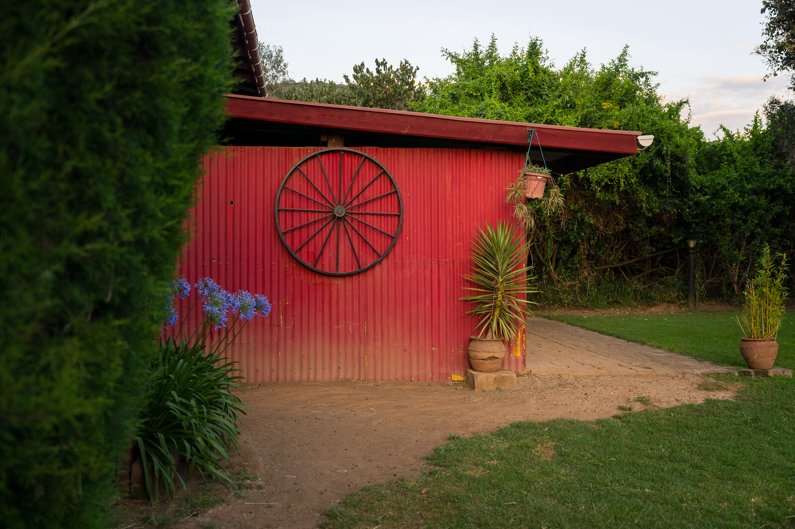
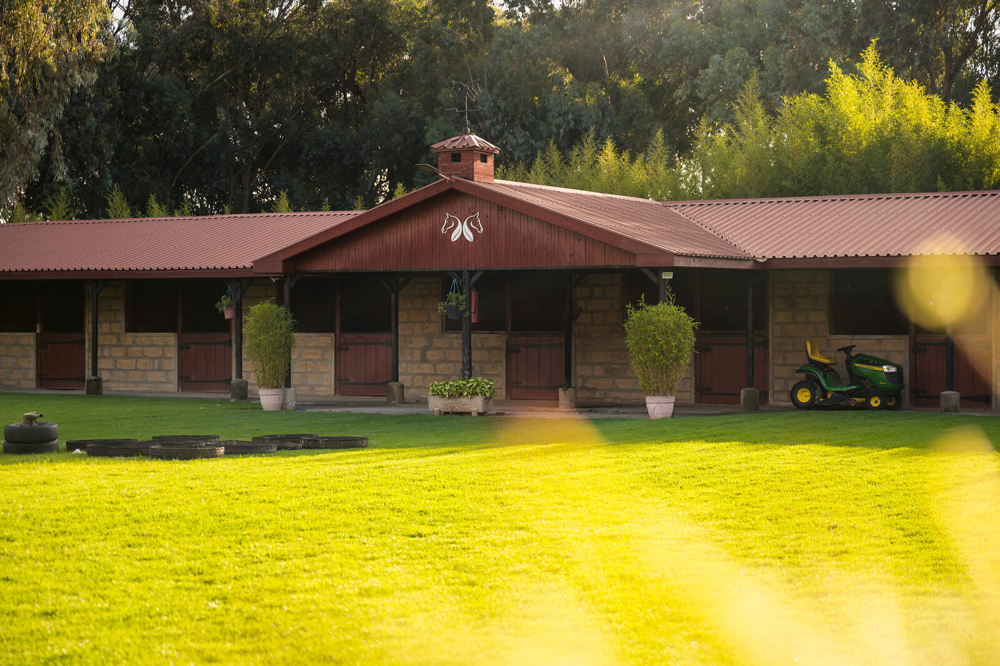

Each farmhouse comes with its own private chef — there is no restaurant, no set menu, and no dinner bell. Meals are planned with you on arrival and cooked in the farmhouse kitchen, as simply or elaborately as you like.

Our kitchen garden provides most of what reaches the table — heirloom tomatoes, cut herbs, salad leaves, stone fruit, free-range eggs, and milk from the house cow.
What we don't grow, we source from small farms in the Rift Valley, or occasionally Nairobi for the unusual.

Breakfast on the veranda. Lunch laid out in the orchard. Dinner by the fire, or under the stars at a long table in the garden. Picnics packed for a day out on horseback.
Special occasions — anniversaries, birthdays, long weekends — are a quiet speciality.